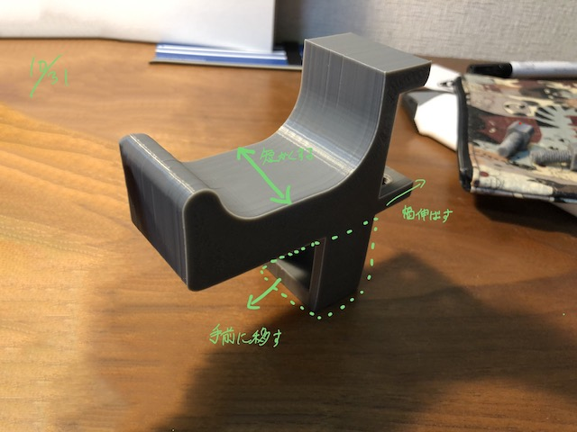

2020.10.25~
梅雨も明けたというのに雨が降る日が多く、部屋の中に洗濯物を干す機会が増えたが、干すところがない。
自分の家はもちろん、ひとり暮らしをする友人の家、親戚の家も同様にないらしい。厳密にいうとあるが、
安定性がないという声が多かった。
帰宅すると落ちていることが多い。
して、部屋干しの安定性を高めるものを製作する。
〜〜〜〜〜〜〜〜〜〜〜〜〜〜〜〜〜〜〜〜〜〜〜〜〜〜〜〜〜〜〜〜〜〜〜〜〜〜〜〜〜〜〜〜〜〜〜〜〜〜〜〜
せっかくなのでどちらかのデータの数値をいじって作ることにする。決して手抜きではないことを、ここでは
声を大にして言いたい。
データが開けなくなってしまったため１からデータを作り、印刷した。見た目はダサいが、強度は充分である。

データを修正。安定性を保ちつつ、ボディを細くし軽量化することに成功した。ぢchクォ伊wvbcqwrvぼqwkk
ネジを２つにし安定性を向上させた。また、ハンガーを縦方向に干しやすいように改良した。